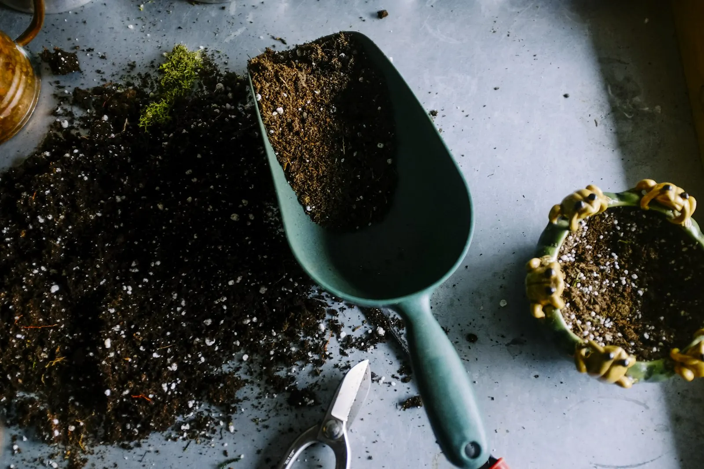
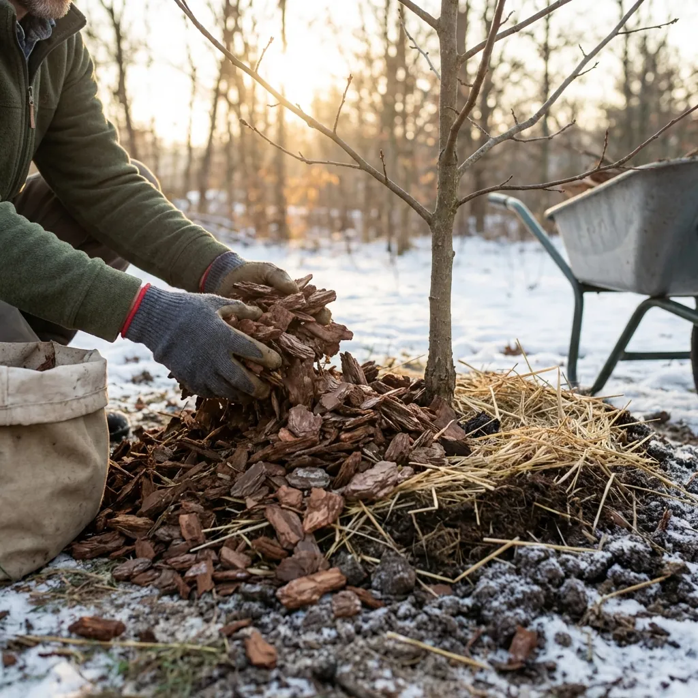

Doğa hiçbir şeyi israf etmez. Evinizdeki sebze kabuklarını, kahve telvelerini ve yumurta kabuklarını bitkileriniz için "siyah altına" dönüştürebilirsiniz. Kompost hem çöp miktarınızı azaltır hem de toprak kalitesini inanılmaz derecede iyileştirir.
Kompost Nedir?
Kompost, organik atıkların mikroorganizmalar tarafından parçalanarak zengin bir gübreye dönüşme sürecidir. Bu gübre, toprağın yapısını iyileştirir, su tutma kapasitesini artırır ve bitkilerinize yavaş salınımlı, doğal bir besin kaynağı sunar. Kimyasal gübrelerden çok daha sağlıklı ve çevre dostudur.

Yeşil ve Kahverengi Malzeme Dengesi
Kompostun sırrı "Yeşil" (Azot) ve "Kahverengi" (Karbon) malzemelerin doğru dengelenmesidir. İdeal oran yaklaşık 3 ölçek kahverengi malzemeye karşı 1 ölçek yeşil malzemedir.
- Yeşiller (Azot kaynağı): Meyve-sebze kabukları, taze çim biçintisi, çay posası, kahve telvesi, yumurta kabuğu.
- Kahverengiler (Karbon kaynağı): Kuru yapraklar, dal parçaları, karton, gazete kağıdı, saman, talaş.
Et, balık ve süt ürünleri (koku ve zararlı hayvanları çeker), yemekli yağlı atıklar, hasta bitki artıkları, evcil hayvan dışkısı ve kimyasal işlem görmüş odunlar kompost kabına konulmamalıdır.
Adım Adım Uygulama
1. Kab Seçimi: Bahçeniz varsa zeminde açık bir kompost alanı oluşturabilirsiniz. Balkon veya mutfak için ise "Bokashi kovası" veya "solucan kompostu" gibi kapalı sistemler idealdir.
2. Katmanlama: Kahverengi ve yeşil malzemeleri katman katman dizin. En altta kalın dal parçaları koyarak havalanmayı sağlayın.
3. Nem Kontrolü: Kompostunuz sıkılmış sünger kıvamında nemli olmalıdır. Çok kuruysa su ekleyin, çok ıslaksa karton veya kuru yaprak ekleyin.
4. Karıştırma: Haftada bir karıştırarak oksijen sağlayın. Bu, ayrışma sürecini hızlandırır ve kötü kokuyu engeller.
5. Sabırlı Olun: 2-6 ay içinde koyu renkli, toprak kokulu, ufalanabilen mükemmel bir gübre elde edeceksiniz.

Kompostunuzu Nasıl Kullanırsınız?
Hazır kompostu bitkilerinizin dibine 2-3 cm kalınlığında serpin veya saksı toprağına %20-30 oranında karıştırın. Çim alanınızın üzerine ince bir tabaka halinde yayarak (top-dressing) çimi besleyebilirsiniz. Ayrıca kompost çayı yaparak (kompostu suyla karıştırıp süzerek) sıvı gübre olarak da kullanabilirsiniz.